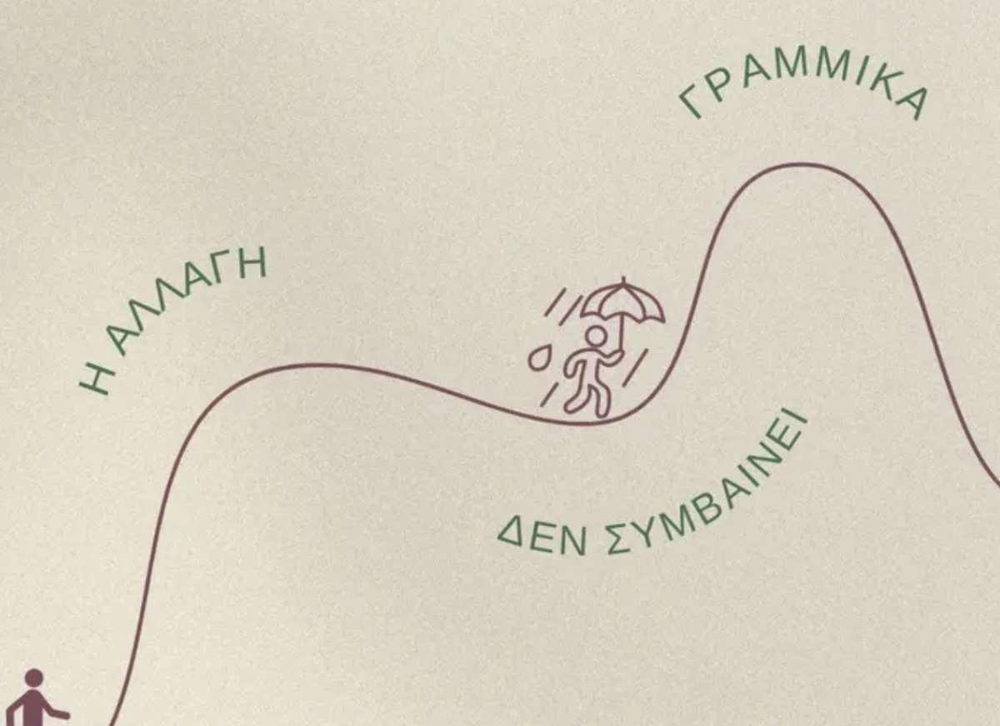

Άγχος και πίεση
Επίμονη ανησυχία, δυσκολία στον ύπνο, η αίσθηση ότι δεν προλαβαίνετε ή ότι δεν είστε αρκετοί.
Δεν χρειάζεται να ξέρετε από πού να ξεκινήσετε ή πώς να το ονομάσετε. Αρκεί να υπάρχει κάτι που σας απασχολεί και η διάθεση να το κοιτάξουμε μαζί.

Δεν χρειάζεται να ταιριάζετε ακριβώς σε κάποια από αυτές. Είναι απλώς αφορμές για να καταλάβετε αν αυτό που ζείτε χωράει σε μια συζήτηση.
Επίμονη ανησυχία, δυσκολία στον ύπνο, η αίσθηση ότι δεν προλαβαίνετε ή ότι δεν είστε αρκετοί.
Επαναλαμβανόμενοι καβγάδες, απόσταση, αποφάσεις που μένουν ανοιχτές, εμπιστοσύνη που δοκιμάζεται.
Εντάσεις στο σπίτι, όρια, χωρισμός, αναδοχή και υιοθεσία, αλλαγές στη σύνθεση της οικογένειας.
Δυσκολίες στο σχολείο, συμπεριφορά που ανησυχεί, απομόνωση, ένταση στην επικοινωνία με τον έφηβο.
Πένθος, χωρισμός, μετακόμιση, αλλαγή δουλειάς — περίοδοι όπου τα παλιά δεδομένα δεν ισχύουν πια.
Χωρίς συγκεκριμένη αιτία. Κούραση, κενό, απώλεια ενδιαφέροντος για πράγματα που κάποτε μετρούσαν.

Είμαι ψυχολόγος και εκπαιδευμένη στη συστημική ψυχοθεραπεία. Ζω και εργάζομαι στη Θεσσαλονίκη.
Στη δουλειά μου με απασχολεί λιγότερο το τι «έχει» κάποιος και περισσότερο το πώς ζει: μέσα σε ποιες σχέσεις, ποιες υποχρεώσεις και ποιες ιστορίες που κουβαλάει από την οικογένειά του. Οι δυσκολίες σπάνια ανήκουν σε ένα μόνο άτομο — συνήθως έχουν να κάνουν με το πώς συνδεόμαστε με τους γύρω μας.
Τα τελευταία χρόνια εργάζομαι με παιδιά και εφήβους στο Ελληνικό Παιδικό Χωριό, όπου στηρίζω και οικογένειες στη διαδικασία της αναδοχής και της υιοθεσίας. Παράλληλα δουλεύω με ενήλικες και ζευγάρια.
Έχω περάσει από πλαίσια ψυχικής υγείας που με δίδαξαν πολλά — το Ψυχιατρικό Νοσοκομείο Θεσσαλονίκης, το Κέντρο Ψυχικής Υγείας Δυτικού Τομέα, το Εργαστήριο Εφαρμοσμένης Ψυχολογίας του ΑΠΘ — και έχω συμμετάσχει σε έρευνα για την ψυχική υγεία των νέων στο University of Birmingham.
«Η αλλαγή δεν συμβαίνει γραμμικά.»
Η συστημική προσέγγιση ξεκινά από μια απλή παραδοχή: κανείς δεν δυσκολεύεται στο κενό. Ό,τι ζούμε παίρνει νόημα μέσα στις σχέσεις μας — την οικογένεια, τον σύντροφο, τη δουλειά, την εποχή που μεγαλώσαμε.
Αυτό αλλάζει το ερώτημα. Αντί για «τι φταίει σε εσένα», κοιτάμε πώς λειτουργεί το μοτίβο: ποιος αντιδρά σε ποιον, τι επαναλαμβάνεται, τι ρόλο έχει αναλάβει ο καθένας χωρίς να το έχει επιλέξει. Συχνά η δυσκολία ενός ανθρώπου είναι ο τρόπος με τον οποίο μια ολόκληρη οικογένεια προσπαθεί να ισορροπήσει.
Πρακτικά, αυτό σημαίνει ότι σε κάποιες περιπτώσεις δουλεύουμε μόνοι μας και σε άλλες καλούμε και άλλα πρόσωπα — τον σύντροφο, τους γονείς, ένα αδερφάκι. Δεν είναι κάτι που αποφασίζεται από πριν· το βρίσκουμε μαζί.
Ένας σταθερός χώρος για να δούμε τι σας δυσκολεύει, πώς έφτασε να γίνει έτσι και τι μπορεί να αλλάξει. Δουλεύουμε με τον ρυθμό σας, χωρίς πίεση να πείτε περισσότερα από όσα αντέχετε.
Για ενήλικες κάθε ηλικίαςΔουλειά με το παιδί ή τον έφηβο, πάντα σε συνεννόηση με τους γονείς. Συχνά αυτό που φαίνεται ως «πρόβλημα συμπεριφοράς» είναι ο τρόπος που ένα παιδί εκφράζει κάτι για το οποίο δεν έχει ακόμη λέξεις.
Παιδιά σχολικής ηλικίας και έφηβοιΓια ζευγάρια που βρίσκονται στην ίδια συζήτηση ξανά και ξανά. Δεν ψάχνουμε ποιος έχει δίκιο, αλλά τι εξυπηρετεί ο καβγάς και τι προσπαθεί ο καθένας να πει και δεν ακούγεται.
Ζευγάρια, με ή χωρίς γάμο, σε κάθε φάση της σχέσηςΌταν το ζητούμενο δεν είναι θεραπεία για το παιδί αλλά στήριξη για εσάς: όρια, επικοινωνία, διαχείριση εντάσεων, αλλαγές στην οικογένεια όπως ο χωρισμός, η αναδοχή ή η υιοθεσία.
Γονείς, ζευγάρια γονέων, ευρύτερη οικογένειαΟι συνεδρίες γίνονται από κοντά στη Θεσσαλονίκη ή διαδικτυακά μέσω Microsoft Teams. Η διαδικτυακή συνεδρία έχει την ίδια διάρκεια και την ίδια εμπιστευτικότητα με τη δια ζώσης — χρειάζεται μόνο ένας ήσυχος χώρος και μια σταθερή σύνδεση. Είναι λύση για όσους μένουν μακριά, ταξιδεύουν ή δυσκολεύονται να μετακινηθούν.
Μου γράφετε με e-mail ή από τη φόρμα. Δεν χρειάζεται να εξηγήσετε τίποτα αναλυτικά — μια-δυο γραμμές αρκούν.
Μια συνάντηση γνωριμίας. Μου λέτε τι σας φέρνει, σας λέω πώς δουλεύω, και βλέπουμε αν αισθάνεστε άνετα. Δεν δεσμεύεστε σε τίποτα παραπάνω.
Αν αποφασίσουμε να συνεχίσουμε, ορίζουμε μια σταθερή ώρα. Η διάρκεια της θεραπείας δεν είναι ίδια για όλους και την επαναξιολογούμε μαζί.
Η συνεδρία διαρκεί περίπου 50 λεπτά. Συνήθως ξεκινάμε με μία συνάντηση την εβδομάδα, ώστε να υπάρξει συνέχεια. Η συχνότητα μπορεί να αλλάξει καθώς προχωράμε, πάντα σε συνεννόηση.
Δεν υπάρχει μία απάντηση. Κάποιες φορές αρκούν λίγες συναντήσεις για ένα συγκεκριμένο ζήτημα· άλλες φορές χρειάζεται περισσότερος χρόνος. Αυτό που μπορώ να υποσχεθώ είναι ότι θα το κουβεντιάζουμε ανοιχτά και δεν θα συνεχίσουμε επειδή «έτσι γίνεται».
Ναι. Ό,τι ειπωθεί στη συνεδρία καλύπτεται από το επαγγελματικό απόρρητο και τον κώδικα δεοντολογίας των ψυχολόγων. Οι μόνες εξαιρέσεις είναι στενά ορισμένες και αφορούν σοβαρό κίνδυνο για τη ζωή ή την ασφάλεια — και ακόμη και τότε, θα το συζητήσουμε πρώτα μαζί.
Στη θεραπεία παιδιών και εφήβων συμφωνούμε από την αρχή, μαζί με τους γονείς, τι μοιράζεται και τι όχι, ώστε το παιδί να νιώθει ασφάλεια.
Όχι απαραίτητα. Η συστημική προσέγγιση κοιτάζει τις σχέσεις, αλλά αυτό δεν σημαίνει ότι πρέπει να είναι όλοι παρόντες. Πολλές φορές δουλεύουμε μόνοι μας. Αν κάποια στιγμή φανεί χρήσιμο να έρθει και κάποιος άλλος, θα το προτείνω και θα το αποφασίσουμε μαζί.
Μου στέλνετε ένα e-mail ή συμπληρώνετε τη φόρμα με το όνομά σας και έναν τρόπο να σας βρω. Απαντώ συνήθως μέσα σε λίγες μέρες. Στο πρώτο μήνυμα δεν χρειάζεται —και καλύτερα να μην— γράψετε προσωπικές λεπτομέρειες· αυτά τα λέμε από κοντά.
Μέσω Microsoft Teams. Σας στέλνω έναν σύνδεσμο πριν από κάθε συνάντηση — δεν χρειάζεται λογαριασμός, ανοίγει από τον browser ή την εφαρμογή. Χρειάζεστε έναν χώρο όπου δεν θα σας ακούει ή θα σας διακόπτει κάποιος, και μια σταθερή σύνδεση.
Το κόστος της συνεδρίας συζητείται στην πρώτη μας επικοινωνία, πριν κλείσουμε ραντεβού, ώστε να το ξέρετε από την αρχή.
Δεν χρειάζεται να ξέρετε τι θέλετε να πείτε. Γράψτε ή τηλεφωνήστε μου και τα υπόλοιπα τα βρίσκουμε από κοντά.
Στο πρώτο μήνυμα ή τηλεφώνημα δεν χρειάζεται να περιγράψετε τι σας συμβαίνει. Αρκεί το όνομά σας και ότι θα θέλατε μια πρώτη συνάντηση — τα υπόλοιπα τα λέμε στη συνεδρία, όπου προστατεύονται από το επαγγελματικό απόρρητο.